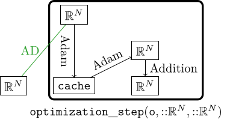

Standard Neural Network Optimizers
In this section we discuss optimization methods that are often used in training neural networks. From a perspective of manifolds the optimizer methods outlined here operate on $\mathfrak{g}^\mathrm{hor}$ only. Each of them has a cache associated with it[1] and this cache is updated by GeometricOptimizers.update!. The precise role of this function is described below.
The Gradient Optimizer
The gradient optimizer is the simplest optimization algorithm used to train neural networks. It was already briefly discussed when we introduced Riemannian manifolds.
It simply does:
\[\mathrm{weight} \leftarrow \mathrm{weight} + (-\eta\cdot\mathrm{gradient}),\]
where addition has to be replaced with appropriate operations in the manifold case[2].
A method carries no learning rate: it produces a direction, and how far to go along it is a SimpleSolvers.LinesearchMethod — Static for a fixed step, DecayingStatic for one that decays.
const η = 0.01
method = GradientMethod()GradientMethod()What a method does hold between steps is its OptimizerState, built from the method and the parameters it will be applied to. The parameters may be a vector, one of the manifolds, or a whole set of network parameters — a NetworkParameters, which is what the rest of this ecosystem keeps them in and the only shape a set arrives in:
weight = NetworkParameters((A = zeros(4, 4), ))
state = OptimizerState(method, weight)
typeof(state)GradientState{Float64, NetworkParameters{Float64, (:A,), Tuple{Matrix{Float64}}}, @NamedTuple{A::GlobalSection{Float64, Matrix{Float64}, Nothing}}, NetworkParameters{Float64, (:A,), Tuple{Matrix{Float64}}}}For gradient descent that state is trivial — the direction is the gradient itself, scaled by $-\eta$ — so there is nothing in it to look at. The two methods below are where it starts to matter.
The Momentum Optimizer
The momentum optimizer is similar to the gradient optimizer but further stores past information as first moments. We let these first moments decay with a decay parameter $\alpha$:
\[\mathrm{weights} \leftarrow \mathrm{weights} + (\alpha\cdot\mathrm{moment} - \eta\cdot\mathrm{gradient}),\]
where addition has to be replaced with appropriate operations in the manifold case.
In the case of the momentum optimizer the cache is non-trivial:
const α = 0.5
method = MomentumMethod(α)
weight = NetworkParameters((A = zeros(4, 4), ))
state = OptimizerState(method, weight)
# the moment is stored for each array in `weight`
GeometricOptimizers.momentum(state).A4×4 Matrix{Float64}:
0.0 0.0 0.0 0.0
0.0 0.0 0.0 0.0
0.0 0.0 0.0 0.0
0.0 0.0 0.0 0.0It is initialized with zeros, so the first step of a solve is the same one plain gradient descent would take; from the second step on the moment carries the history.
If the weight is on a manifold the moment is allocated on $\mathfrak{g}^\mathrm{hor}$ instead, and OptimizerState does that without being told:
manifold_weight = NetworkParameters((Y = rand(StiefelManifold, 5, 3), ))
typeof(GeometricOptimizers.momentum(OptimizerState(method, manifold_weight)).Y)StiefelLieAlgHorMatrix{Float64, SkewSymMatrix{Float64, Vector{Float64}}, Matrix{Float64}}So if the weight is $Y\in{}St(n,N)$ the corresponding cache is initialized as the zero element on $\mathfrak{g}^\mathrm{hor}\subset\mathbb{R}^{N\times{}N}$ as this is the global tangent space representation corresponding to the StiefelManifold.
The Adam Optimizer
The Adam Optimizer is one of the most widely used neural network optimizers. The cache of the Adam optimizer consists of first and second moments. The first moments $B_1$, similar to the momentum optimizer, store linear information about the current and previous gradients, and the second moments $B_2$ store quadratic information about current and previous gradients. These second moments can be interpreted as approximating the curvature of the optimization landscape.
If all the weights are on a vector space, then we directly compute updates for $B_1$ and $B_2$:
- $B_1 \gets ((\rho_1 - \rho_1^t)/(1 - \rho_1^t))\cdot{}B_1 + (1 - \rho_1)/(1 - \rho_1^t)\cdot{}\nabla{}L,$
- $B_2 \gets ((\rho_2 - \rho_1^t)/(1 - \rho_2^t))\cdot{}B_2 + (1 - \rho_2)/(1 - \rho_2^t)\cdot\nabla{}L\odot\nabla{}L,$
where $\odot:\mathbb{R}^n\times\mathbb{R}^n\to\mathbb{R}^n$ is the Hadamard product: $[a\odot{}b]_i = a_ib_i.$ $\rho_1$ and $\rho_2$ are hyperparameters. Their defaults, $\rho_1=0.9$ and $\rho_2=0.99$, are taken from [24, page 301]. After having updated the cache (i.e. $B_1$ and $B_2$) we compute a velocity with which the parameters of the network are then updated:
- $W_t\gets -\eta{}B_1/\sqrt{B_2 + \delta},$
- $Y^{(t+1)} \gets Y^{(t)} + W^{(t)},$
where the last addition has to be replaced with appropriate operations when dealing with manifolds. Further $\eta$ is the learning rate and $\delta$ is a small constant that is added for stability. The division, square root and addition in the computation of $W_t$ are performed element-wise.
In the following we show a schematic update that Adam performs for the case when no elements are on manifolds (also compare this figure with the general optimization framework):


We demonstrate the Adam state on the same example from before. Note the spelling: $\rho_1$ and $\rho_2$ above are β₁ and β₂ here, as everywhere else in this package.
const ρ₁ = 0.9
const ρ₂ = 0.99
const δ = 1e-8
method = Adam(Float64; β₁ = ρ₁, β₂ = ρ₂, δ)
state = OptimizerState(method, weight)
GeometricOptimizers.first_moment(state).A4×4 Matrix{Float64}:
0.0 0.0 0.0 0.0
0.0 0.0 0.0 0.0
0.0 0.0 0.0 0.0
0.0 0.0 0.0 0.0and the second moment alongside it:
GeometricOptimizers.second_moment(state).A4×4 Matrix{Float64}:
0.0 0.0 0.0 0.0
0.0 0.0 0.0 0.0
0.0 0.0 0.0 0.0
0.0 0.0 0.0 0.0Weights on Manifolds
The problem with generalizing Adam to manifolds is that the Hadamard product $\odot$ and the other element-wise operations ($/$, $\sqrt{}$ and $+$) are coordinate-dependent: changing the basis changes the update, so these operations do not define intrinsic operations on tangent vectors. GeometricOptimizers resolves this for Adam by applying them in the global tangent space representation. A similar approach is shown in [25].
Cayley ADAM: a scalar second moment
ScalarMomentAdam is the other published answer to that problem, available here as a baseline to compare against: it is Cayley ADAM, [26, Algorithm 2], which avoids the Hadamard product by collapsing the second moment to a scalar. Where Adam accumulates $\bar{G}\odot\bar{G}\in\mathfrak{g}^\mathrm{hor}$, it accumulates $\lVert\bar{G}\rVert^2$, one number, and divides the first moment by $\sqrt{m_2 + \delta}$:
\[m_1 \gets \frac{\beta_1 - \beta_1^t}{1 - \beta_1^t}m_1 + \frac{1 - \beta_1}{1 - \beta_1^t}\bar{G}, \qquad m_2 \gets \frac{\beta_2 - \beta_2^t}{1 - \beta_2^t}m_2 + \frac{1 - \beta_2}{1 - \beta_2^t}\lVert\bar{G}\rVert^2, \qquad W_t \gets -\frac{m_1}{\sqrt{m_2 + \delta}}.\]
So the whole matrix gets one adaptive learning rate instead of one per coordinate, and the second moment carries no direction — which is what the method is named for, and the reason this is a baseline rather than the package's recommended method. It is nonetheless a reproduction of a published algorithm, not a straw man: on a given objective it may well beat Adam.
The source does not require a global tangent space representation: its scalar second moment is already independent of the choice of coordinates. This implementation nevertheless uses the same horizontal lift, bias-correction convention, section update and line search as Adam, so the two methods can be compared inside the same optimization framework.
By default, $\lVert\bar{G}\rVert^2$ is the norm of that horizontal lift. This is the quotient-space quantity naturally available to the optimizer and avoids another gradient evaluation. ScalarMomentAdam(; ambient_norm = true) instead uses the squared Frobenius norm of the ambient Euclidean gradient $\nabla{}L$, as the source does. These norms come from different views of the Stiefel manifold — as a homogeneous quotient and as an embedded matrix manifold — and need not agree.
A retraction is a two-argument map: its update depends on both the current point and a tangent vector at that point. Algorithm 2 specializes this map to the Cayley retraction and evaluates the resulting implicit equation with two fixed-point iterations. Its step-length cap guarantees that this iteration is a contraction. GeometricOptimizers separates the optimizer from the retraction, evaluates Cayley directly, and enforces admissible step lengths through GeometricOptimizers.step_αmax; consequently any AbstractRetraction may be used.
The source's algorithm is Stiefel-only and so is this: the method accepts exactly one StiefelManifold, and ordinary arrays, parameter sets, Grassmann solutions and mixed trees throw an ArgumentError.
The source's Algorithm 2, symbol by symbol
In its notation, with the numbering of its own pseudocode. Lines 1 and 3 are omitted: line 1 is the input list, from which $\mathcal{G}$ is the stochastic Euclidean gradient, $X$ the iterate, $l$ the learning rate, $\varepsilon = 10^{-8}$, $q = 0.5$ and $s = 2$; line 3 is the loop header for k = 0 to T do, which is where line 6's $1 - \beta_2^k$ gets the $k = 0$ discussed below.
2 X₁ orthonormal, M₁ = 0, v₁ = 1
4 M_{k+1} ← β₁ M_k + (1 - β₁) 𝒢(X_k)
5 v_{k+1} ← β₂ v_k + (1 - β₂) ‖𝒢(X_k)‖²
6 v̂_{k+1} ← v_{k+1} / (1 - β₂ᵏ)
7 r ← (1 - β₁ᵏ) √(v̂_{k+1} + ε)
8 Ŵ_k ← M_{k+1} X_kᵀ - ½ X_k (X_kᵀ M_{k+1} X_kᵀ)
9 W_k ← (Ŵ_k - Ŵ_kᵀ) / r
10 M_{k+1} ← r W_k X_k # project the momentum onto the tangent space
11 α ← min{ l, 2q / (‖W_k‖ + ε) }
12 Y⁰ ← X_k - α M_{k+1}
13 for i = 1 to s
14 Yⁱ ← X_k - (α/2) W_k (X_k + Y^{i-1})
15 X_{k+1} ← Y^sLines 8–10 are its equation (2), and lines 12–15 are $s$ fixed-point iterations of its equation (5) — its closed-form Cayley transform (3) written implicitly. Line 11 enforces the contraction condition of its Theorem 1, and does so conservatively rather than exactly: the theorem asks for $\alpha \in (0, \min\{1, 2/\lVert{}W\rVert\})$, while line 11 at $q = 0.5$ caps $\alpha$ at $1/(\lVert{}W\rVert + \varepsilon)$, half of that bound, and puts the learning rate $l$ where the theorem has $1$.
The pseudocode is cross-checked against the authors' implementation (stiefel_optimizer.py, class AdamG, in JunLi-Galios/Optimization-on-Stiefel-Manifold-via-Cayley-Transform); where the two disagree, the implementation is followed, and ScalarMomentAdam's docstring records the three disagreements along with the three places this port departs from the source deliberately.
Where each symbol lives
For a single Y::StiefelManifold{T}, $Y \in \mathbb{R}^{N\times{}n}$, at iteration t = state.iterations ≥ 1:
| Source | Representation | Implementation |
|---|---|---|
| $X_k$ | ambient Stiefel matrix | state.x, cache.x and state.section |
| $\mathcal{G}(X_k)$ | horizontal lift in $\mathfrak{g}^\mathrm{hor}$ | gradient_array(cache), i.e. global_rep(section(state), ∇L) |
| $M_{k+1}$ | horizontal lift | cache.m₁, state.m₁, bias-corrected |
| $v_{k+1}$ | scalar | cache.m₂, state.m₂, bias-corrected |
| $\hat{m}$, $\hat{v}$ | — | absorbed into the bias-corrected storage |
| $r$ | scalar | cache.m̃₂ = √(m₂ + δ); the $(1-\beta_1^k)$ half is absorbed |
| $W_k$ | horizontal lift | -direction(cache) |
| $\alpha$ | scalar | the line search's step length, capped by GeometricOptimizers.step_αmax |
| lines 12–15 | — | update_section!(section, α⋅direction, retraction) |
| $\varepsilon$ | scalar | method.δ |
| $k$ | iteration counter | state.iterations |
Bias-corrected storage is Adam's convention here and not a departure from the source: substituting $m = (1 - \beta_1^t)\hat{m}$ into line 4 gives the $m_1$ recursion above, and likewise for $v$ with line 5, after which line 7's $r$ is $\sqrt{\hat{v} + \varepsilon}$ alone and line 9 is $W = \hat{m}/\sqrt{\hat{v}+\varepsilon}$. Lines 9 and 10 divide and re-multiply by $r$ so that the stored momentum is un-normalized; storing m₁ un-normalized is the same thing.
Lines 8–10 cost nothing to port, which is what the next section is about.
The source's projection is global_rep
Algorithm 2 spends three of its lines building the tangent-space projection it needs — an auxiliary matrix $\hat{W} = ZY^T - \frac{1}{2}Y(Y^TZY^T)$, its skew-symmetrization $W = \hat{W} - \hat{W}^T$ and the projection $\pi_{T_Y}(Z) = WY$ (its equation (2)). None of it has to be implemented here, because that map is GeometricOptimizers.Ω and its conjugate is global_rep. Writing $\hat{W} = (\mathbb{I} - \frac{1}{2}YY^T)ZY^T$,
\[W = \hat{W} - \hat{W}^T = \left(\mathbb{I} - \tfrac{1}{2}YY^T\right)ZY^T - YZ^T\left(\mathbb{I} - \tfrac{1}{2}YY^T\right) = \Omega(Y, Z),\]
and conjugating by the global section $\lambda(Y) = [\,Y \mid \lambda\,]$ gives, using $Y^T(\mathbb{I} - \frac{1}{2}YY^T) = \frac{1}{2}Y^T$ and $\lambda^TY = \mathbb{O}$, block by block
| block of $\lambda(Y)^TW\lambda(Y)$ | value | field of StiefelLieAlgHorMatrix |
|---|---|---|
| $Y^TWY$ | $\frac{1}{2}(Y^TZ - Z^TY) = \mathrm{skew}(Y^TZ)$ | $A$ |
| $\lambda^TWY$ | $\lambda^TZ$ | $B$ |
| $Y^TW\lambda$ | $-(\lambda^TZ)^T$ | $-B^T$ |
| $\lambda^TW\lambda$ | $\mathbb{O}$ | the zero block |
which is exactly global_rep(GlobalSection(Y), Z) — for any $Z$, tangent or not. So $W = \lambda(Y)\bar{G}\lambda(Y)^T$ for $\bar{G} =$ global_rep(λY, Z), the source's $W_k$ is the horizontal lift the first-order caches already receive their gradient in, and its $\pi_{T_Y}(Z)$ is that lift read back at $Y$. test/scalar_moment_adam.jl pins the identity numerically against a literal transcription of the source's formula, so it cannot silently stop holding.
What the source needs those lines for a second time — re-projecting the momentum onto the tangent space at the new iterate, its equation (6) — is update_section!'s job here, and that one is a genuine departure: transport by the global section and transport by re-projection agree for a Lie group and differ on a proper homogeneous space.
The Adam Optimizer with Decay
The Adam optimizer with decay is similar to the standard Adam optimizer with the difference that the learning rate $\eta$ decays exponentially. We start with a relatively high learning rate $\eta_1$ (e.g. $10^{-2}$) and end with a low learning rate $\eta_2$ (e.g. $10^{-8}$). If we want to use this optimizer we have to tell it beforehand how many epochs we train for such that it can adjust the learning rate decay accordingly:
There is no new method here and no schedule of its own: AdamOptimizerWithDecay is Adam paired with a DecayingStatic line search, returned as a NamedTuple to splat into an Optimizer.
const η₁ = 1e-2
const η₂ = 1e-6
const n_epochs = 1000
pairing = AdamOptimizerWithDecay(n_epochs, Float64; η₁ = η₁, η₂ = η₂)
pairing.linesearchDecayingStatic from α = 0.01 to α = 1.0e-6 over 1000 iterations.The state is therefore exactly Adam's, because the method is:
state = OptimizerState(pairing.algorithm, weight)
typeof(GeometricOptimizers.first_moment(state).A)Matrix{Float64} (alias for Array{Float64, 2})Library functions
GradientMethod, MomentumMethod, Adam, ScalarMomentAdam, AdamOptimizerWithDecay, DecayingStatic and OptimizerState. Their docstrings are on the reference page, where every docstring in the package is rendered once; the names above link to them.
Taking a step with one of these over the parameter tree of a neural network is GeometricMachineLearning's job: it wraps an OptimizerState and a cache in an optimizer of its own and walks the tree with them. The framework it does that within is described here.
References
- [24]
- I. Goodfellow, Y. Bengio and A. Courville. Deep learning (MIT press, Cambridge, MA, 2016).
- 1In the case of the gradient optimizer this cache is trivial.
- 2In the manifold case the expression $-\eta\cdot\mathrm{gradient}$ is an element of the global tangent space $\mathfrak{g}^\mathrm{hor}$ and a retraction maps from $\mathfrak{g}^\mathrm{hor}$. We then still have to compose it with the updated global section $\Lambda^{(t)}$.